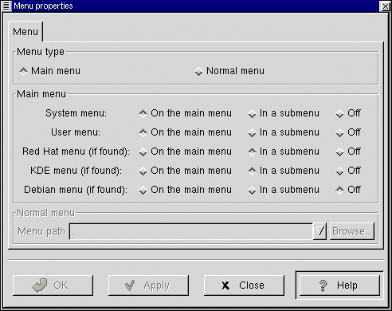
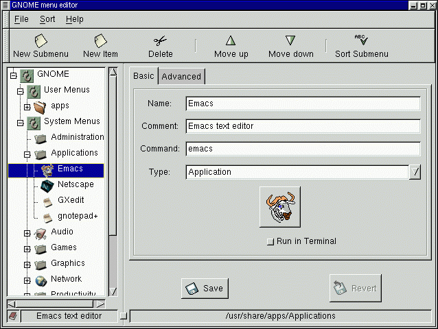

Главное меню, расположенное на панели GNOME, служит для запуска используемых вами приложений. По умолчанию, главное меню использует некоторый стандартный набор приложений. В этом разделе будет объяснено как изменить этот набор, чтобы создать главное меню, отвечающее вашим потребностям и предпочтениям.
Главное меню состоит из двух частей: системные меню и пользовательские меню. Ниже объясняется, как добавлять и удалять приложения из пользовательских меню с помощью редактора меню. Системные меню могут быть изменены только системным администратором (root).
Чтобы изменить настройку главного меню (или любого другого меню на вашей панели), щелкните на пиктограмму этого меню правой кнопкой мыши и выберите Свойства. Это запустит окно-диалог настройки меню.
Рисунок 8-1. Диалог настройки меню

Этот диалог позволит вам настроить различные свойства меню. В первую очередь, вы можете выбрать тип меню, что позволяет вам переделать главное меню в обычное меню.
Следующий раздел относится только к главному меню. В нем вы можете выбрать, что вы хотите поместить в главное меню и его дочерние меню.
Системные меню - это меню содержит некоторый стандартный набор приложений и команд; в частности, оно содержит приложения, входящие в стандартный нвбор поставки GNOME.
Пользовательские меню - это меню содержит элементы, добавленные вами с помощью редактора меню.
Another Level Menu - в это меню входят приложения, входящие в комплект поставки Red Hat Linux. Имеет смысл только для пользователей Red Hat Linux.
KDE Menu - если вы пользуетесь K Desktop Environment, то вы можете также использовать меню KDE.
Debian Menu - в это меню входят приложения, входящие в комплект поставки Debian Linux. Имеет смысл только для пользователей Debian Linux.
Редактор меню предназначен для настройки главного меню. Чтобы запустить редактор меню, щелкните на кнопку главного меню и выберите Настройки | Редактор меню.
Рисунок 8-2. Редактор меню

Окно редактора меню содержит две панели. Слева показано дерево меню. В правой панели находится окно-диалог, с помощью которого вы можете добавлять новые приложения к меню.
В левой панели вы увидите, что главное меню содержит два основных дочерних меню: системные меню и пользовательские меню. Системные меню едины для всех пользователей системы; в исходной поставке GNOME они содержат некоторый стандартный набор приложений. Пользовательские меню исходно пусты; каждый пользователь настраивает их для себя.
Дерево меню показывает дочерние меню в виде папок. Если дочернее меню, в свою очередь, содержит подменю, то рядом с ним показан знак "+"; щелчок на этот знак покажет эти подменю.
Чтобы добавить новый элемент в меню, щелкните на кнопку Новый элемент на панели инструментов. К выбранному (высвеченному) меню будет добавлен новый элемент. Если ни одно меню не было выбрано, то элемент будет добавлен к самому главному меню. Теперь вы можете выделить этот элемент и внести информацию про него в диалоге в правой панели. Заполнив все графы в этом диалоге, нажмите кнопку Сохранить.
Чтобы изменить положение элемента в меню, выделите его (щелчком мыши) и щелкните на кнопку "вверх" или "вниз" на панели инструментов. Вы также можете перетащить элемент меню на другое место с помощью мыши.
ВАЖНАЯ ИНФОРМАЦИЯ: Имейте в виду, что только системный администратор (root) может изменить системные меню. Все остальные пользователи могут лишь изменять свои пользовательские меню.
В редакторе меню - редактор меню поддерживает перетаскивание объектов с помощью мыши. Вы можете перетащить элемент меню на другое место или на папку дочернего меню; вы также можете перетаскивать папки дочерних меню.
Перетаскивание на панель - если вы хотите поместить элемент меню как кнопку запуска на панель, вам достаточно перетащить его с помощью левой кнопки мыши. Другой способ сделать это - это щелкнуть на элемент меню правой кнопкой мыши и выбрать Добавить как кнопку запуска к панели в появившемся меню. Аналогичным образом можно добавить к панели дочернее меню, перетащив его заголовок на панель или щелкнув на заголовок правой кнопкой мыши и выбрав Добавить как меню к панели.